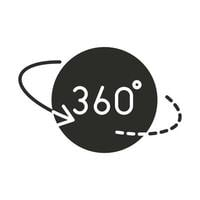

Berikut adalah petunjk pengerjaan yang perlu dipahami sebelum menjawab Kuesioner ini
Sebelum memulai,pastikan headphone/headset/earphone anda telah siap dan terpasang dengan baik pada telinga anda.
Kuiseioner ini akan menampilkan evaluasi audio visual dalam benruk video VR (Virtual Reality) yang dapat anda putar 360 derajat

Kuiseioner ini terbagi kedalam 6 sesi berdasarkan kondisi waktu berbeda pada setiap sesinya. Partisipan diharap dapat mengisi seluruh pertanyaan pada setiap sesinya.